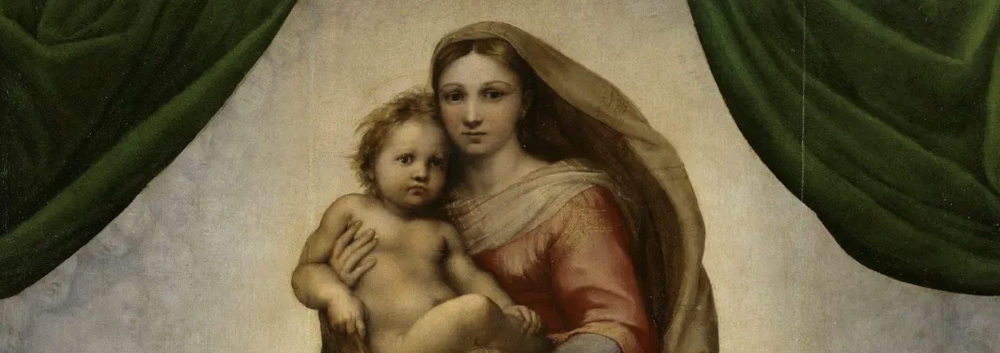

CP. Part 6. Notes
- Chapter 1
Raskolnikov visits Sonia and meets Svidrigailov at Sonia's.
Sv offers false fresh air (440)
back to his room: Razumikhin tells him about Dunia receiving a letter (from Sv?),
R's mom getting sick but telling them that Sonia is R's fiancee (fool in Christ knows) (443)
Raz makes mistaken judgements about R
(he is a "political conspirator", Dunia too, common sense is not enough to understand things) (444)
Porfiry arrives after common sense (Razumikhin).
- Chapter 2 The third Interview with Porfiry (3.0)
In Raskolnikov's room (like Svidrigailov at the beginning of Part IV, p. 281)
both visit to make an offer
(to go on a journey of pleasure, to confess and suffer)
Porfiry confesses to R that he searched his apartment, he tried to entrap him
P tells R about Mykola (the schismatic who craves for sufferring) (454)
P tells R that he is ill
P says that it is a modern illness, a modern case: a theory, a promise of the life of comfort, a moral license to shed blood that "refreshes" (456)
offers R to confess (458)
offers air (460) (doubling, dialogizing the meaning of the same words, see Svidrigailov's earlier offer of air (440))
- Chapter 3 at the restaurant: Svidrigailov and Raskolnikov
Svidrigailov insists that R finding running into him is a miracle (466)
Sv about St. Petersburg: a city that make a strange influence on the soul of man (467)
Sv's description (468)
- Chapter 4. at the restaurant (continues)
Sv. talks about his relations with marfa, Dunia, Parasha,
marrying a 15 years old (478-479)
She has a face of Sistine Madonna
Sv says that the Sistine Madonna has the "face of a mournful holy fool" (480)
Dostoevsky's favorite painting
D gives his favorite painting to Svidrigailov (sensualist villain).
good question for a Kahoot: Identify the speaker: I like children generally, like them very much" (481).

Figure 1. Sistine Madonna (Rafael 1514)
- Chapter five. Svidrigailov and Dunia
Sv about R as Shillerian character
references to “Schiller” (484) is a shorthand for romantic moral idealism —
lofty, emotional, and often naïve notions of virtue and goodness.
Characters who are called “Schillerian” tend to be noble dreamers,
detached from harsh reality, guided by pure feeling rather than practical judgment.
Svidrigailov and Dunia
Sv kills and rapes without remorse (an extraordinary criminal but without a theory:
"a single evil and a hundred good deeds" (490)),
Sv is alone (cf. R) in his being above the law (human and divine).
He cannot be redeemed.
Can he be even punished?
No: Dunia shoots at him and
miraculously bullets miss him (495)
By forcing Dunya into this confrontation,
Sv is asking her to deliver the justice he cannot give himself — a foreshadowing of his later suicide.
- Chapter 6.
Sv. "There are two ways open for RR a bullet in the head, or Siberia" (500).
escape to America is obviously a cipher for this bullet.
money to Sonia (499)
money to fiancee (501)
place for suicide: hotel Adrianople, the room is a closet (cf. R's closet room in the beginning of the novel) (503).
Sv hates water :) (504)
Svidrigailov's dream of a pedophile (509)
a kahoot question :): id the speaker "I am off to foreign lands, brother ... to America" (511).
Fig.2. Grok's visualization of America based on the text of the novel.
ChatGPT just told me: "This image generation request did not follow our content policy."
- Chapter seven. R says farewell to mother and Dunia
Mother (513-516)
Dunia. Dunia and Sonia are afraid Raskolnikov will commit suicide (516-520)
- Chapter eight.